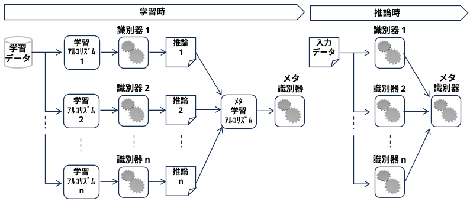
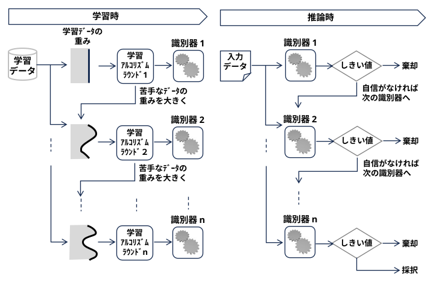
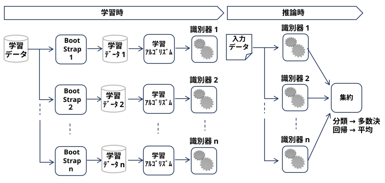

PAC学習（Probably Approximately Correct learning：確率的近似正真学習）とは、機械学習が「どれだけ効率よく、正しく学習できるか」を数学的に定義した理論的な枠組み（計算論的学習理論）です。1984年に計算機科学者のレスリー・ヴァリアント（Leslie Valiant）によって提唱されました。
一言でいうと、「完璧な正解は無理でも、高い確率（Probably）で、かなり惜しい正解（Approximately Correct）にたどり着けるか」を議論する指標です。
それまで、人工知能や機械学習における「学習」という行為は、どこか抽象的あるいは経験則（ノウハウ）に基づいて語られることが多く、数学的な定義が曖昧でした。
ヴァリアントはこの論文で、「計算複雑性理論（Computational Complexity Theory）」の枠組みを機械学習に初めて持ち込みました。
「ある概念がコンピュータにとって『学習可能』であるとはどういうことか？」を、必要とするデータ量（標本複雑性）や計算時間（計算複雑性）が、問題のサイズに対して多項式時間（Polynomial time）に収まるかどうかという基準で厳密に定義しました。
現実のデータには限界があるため、「100%完璧な正解」を求めるのではなく、「高い確率（Probably）」で「わずかな誤差しか出さない、ほぼ正しい状態（Approximately Correct）」に到達できれば「学習に成功した」とみなす、きわめて現実的かつ強力な契約（フレームワーク）を定式化しました。
この論文によって「計算論的学習理論（Computational Learning Theory: CLT）」という巨大な学術分野が創始され、現在の機械学習（サポートベクターマシンやディープラーニングの汎化理論など）の頑健な基盤となっています。なお、著者のヴァリアント教授はこの功績などにより、2010年に「コンピュータ科学のノーベル賞」と呼ばれるチューリング賞を受賞しています
統計学の分野でウラジミール・ヴァプニクらが提唱していた「VC次元（Vapnik-Chervonenkis Dimension）」という概念を、計算論的学習理論（PAC）に初めて本格的に導入しました。この論文により、「ある概念クラスが（サンプル数に関して）PAC学習可能であることの必要十分条件は、そのVC次元が有限であること」が証明されました。これは「学習理論の基本定理」と呼ばれ、後にサポートベクターマシン（SVM）などの発展を支えることになります。
科学の基本原則である「同じくらい説明がつくなら、よりシンプルな理論（モデル）のほうが正しい」という「オッカムの剃刀」を、PAC学習の枠組みで数学的に証明しました。「データ量に対して、十分にシンプルな（ビット表現が短い）一貫した仮説を見つけることができれば、それはPAC学習可能である（高い確率で予測が当たる）」という強力な定理を導き、モデルの複雑性と汎化性能（未知のデータへの対応力）の関係性を明確にしました。
後のブースティング技術の原点となった「問い（オープンプロブレム）を投げかけた論文」
提唱者らはPAC学習モデルの中で以下の未解決問題を提示しました。「あてずっぽう（ランダム予測）よりほんの少しマシな程度の予測しかできない『弱い学習器（弱学習器）』しか作れない場合、それを集めて『任意の精度を持つ強い学習器（強学習器）』へとBoost（昇格）させることは可能なのか？」という問いです。
(蛇足)
現代(2026年)の 「Weak-to-strong generalization (弱から強への一般化)」
人間が超知能を指導できるか、問題みたい･･･(weak と strong が同じだけか･･･)
上記の問いに対して「可能である」と証明し、「世界初のブースティング・アルゴリズム」を構築した歴史的論文
「弱学習ができるならば、必ず強学習も可能である（等価である）」という驚くべき理論的結論を数学的に証明しました。
(蛇足)
古くから複数の識別器の結果を集約した方が精度が良くなることは経験的に知られていたが、文殊の知恵が生じる理由は明確になっていなかった。
PAC学習の未解決問題 (弱学習器から強学習器への昇格) を解く中で、アンサンブル学習の基礎（ブースティング）が発明され、性能が良くなる理由も明確になった。
タイトルは『The Strength of Weak Tie (弱い紐帯の強さ)』 へのオマージュか･･
初期のPAC理論は「データにはノイズがなく、正解（ターゲット概念）が必ず学習モデルの選択肢（仮説空間）の中に存在する」という非現実的な仮定を置いていました。ハスラーらは、正解が選択肢の中にない、あるいはノイズが含まれる状況でも、「選択肢の中で最もマシなもの（経験損失を最小にするもの）」を選ぶことで、一定の確率と近似度で学習ができるという「アグノスティック（不可知論的）PAC学習」の枠組みを定義しました。これが現在の機械学習の評価基準に直結しています。
異なる種類のAI同士を階層的に組み合わせる「スタッキング（Stacking）」の原点。
それまでの組み合わせ法（多数決など）とは異なり、「モデルA、B、Cの予測結果を、さらに別のメタモデルDに入力して最終判断を下す」という2段階（あるいはそれ以上）の階層構造を提案しました。
決定木、線形モデル、ニューラルネットワークなど、全く異なる性質のアルゴリズムを混ぜ合わせてお互いの弱点を補い合わせるための理論的枠組みを作りました。現代のデータ分析コンペ（Kaggleなど）の最終局面で精度を限界まで絞り出すために使われる必須テクニックです。

上記のブースティング理論を応用し、データごとに「間違えやすいもの」の重みを自動的に調整しながら学習を進める「AdaBoost」アルゴリズムを公式に発表しました。この論文により、PAC理論から生まれた「ブースティング」が、顔認識技術（Viola-Jones法など）をはじめとする実用アプリケーションで爆発的に普及することになりました。

ブースティングと双璧をなすアンサンブルの基幹技術「バギング（Bagging）」を確立した論文
・Bagging = Bootstrap (重複を許すサンプリング)＋aggregating (集約)
ブースティングが「前のモデルの失敗を次のモデルが修正する（直列処理）」のに対し、バギングは「データをランダムに少しずつ変えて、たくさんのモデルを同時に並列で学習させ、最後に多数決（または平均）をとる」手法です。
ブレイマンは、特に決定木のように「データが少し変わるだけで結果が激変する不安定なモデル（高バリアンスなモデル）」に対して、バギングが劇的な安定化（エラーの減少）をもたらすことを数学的・実験的に証明しました。

ブースティングを数理統計学（最適化）の視点から再定義した「勾配ブースティング（Gradient Boosting）」の聖典
初期のAdaBoostなどは「間違えたデータの重みを増やす」という直感的な仕組みでしたが、フリードマンはこれを「損失関数という『山』を、微分（勾配）を使って最も効率的に下りていく最適化プロセスである」と数理的に証明しました。
この論文によって、分類問題だけでなく、回帰、ランキング、ロジスティック回帰など、あらゆる損失関数に対してブースティングが適用可能になりました。現代の実務で最も使われている勾配ブースティング木（GBDT）のアルゴリズムは、すべてこの論文の数式がベースになっています。
バギングの究極進化系であり、実務で最も愛される万能アルゴリズム「ランダムフォレスト」の誕生。
『Bagging Predictors』の手法をさらに一歩進め、決定木を作るときに「使うデータ」だけでなく「使う特徴量（変数の選択肢）」もランダムに間引く仕組み（Random Subspace Method）を取り入れました。これにより、似たり寄ったりの木ができるのを防ぎ、多様で独立性の高い「森（Forest）」を作ることに成功しました。
過学習しにくく、事前の細かいハイパーパラメータ調整（チューニング）をしなくてもデフォルトのままで非常に高い精度が出るため、機械学習の実務における「最初のベースラインモデル」としての不動の地位を築きました。
Deep Neural Network はネットワークのアンサンブルとみなすことができ、Drop Outは 「毎回異なる構造の小さなサブネットワーク（弱学習器）を同時に並列学習させている」状態 (Bagging) と同じです。
しかし、従来のPAC学習（およびVC次元）の数式にディープラーニングの巨大なパラメータ数をそのまま代入すると、保証されるエラー境界（汎化ギャップ）が「100%以上」という実質的に意味のない数値（Vacuous Bound）になってしまいます。つまり、古典理論は「ディープラーニングがなぜこれほど高い確率で正解できるのか」を全く説明できません。
現在、研究者たちは単純なパラメータ数ではなく、学習後のネットワークの「滑らかさ」や「データの圧縮率」に着目した PAC-Bayes（PACベイズ）理論 などを使い、ディープラーニングの正当性を数理的に再定義しようと試みています。
(この辺りで脱落･･･)ディープラーニングを訓練すると、パラメータの解は「平坦な解（Flat Minima）」と呼ばれる、周囲の誤差がなだらかな領域に落ち着きやすいことが分かっています。PAC-Bayes理論を用いると、「この平坦な領域に解があるモデルは、実質的な複雑さが低いため、少ないデータでも高い確率で近似的に正しい（PAC学習できる）」ということを数学的に証明できます。これを利用して、ネットワークを極限まで軽量化する「モデル圧縮」の理論的保証も行われています。
古典的PAC理論は「どんな方法でもいいから、データを一番うまく説明できるモデルを探す」という前提（経験リスク最小化）でした。しかしディープラーニングでは、「確率的勾配降下法（SGD）」という特定のアルゴリズムを使って最適化すること自体に、モデルをシンプルに保つ自動ブレーキ（陰的正則化）が働いていることが分かってきました。 近年では、「微分可能学習（勾配を使う学習）のPAC学習能力」についての研究が非常に活発です。
古典的PAC理論では、幾何学的な「入力データの形」が複雑すぎると学習が困難になります（次元の呪い）。 しかしディープラーニングは、層を深く重ねることで、生データから自動的に扱いやすい「特徴量」を切り出す（表現学習）性質を持っています。これにより、PAC理論の前提だった「問題の難しさ」そのものを、ネットワーク自身が簡単な問題へと変換しているという見方がなされ、その多層化のメリットをPACの枠組みで証明する試みが続いています。
ヴァリアントが1984年に定めた「多項式時間で、確率的かつ近似的に正解にたどり着く」というPAC学習のゴール設定そのものは、現代のディープラーニングでも全くブレていません。
ただ、ディープラーニングがあまりにも強力で複雑すぎるため、1980〜90年代の物差し（VC次元など）では測りきれなくなっています。そのため、「ディープラーニングがPAC学習できている理由を説明するための、新しい新しい数学的物差しを作る」ことこそが、現在の計算論的学習理論（CLT）の最前線となっています。
ヴァリアントが定義した初期のPAC学習理論には、大前提として「i.i.d.（独立同一分布）仮定」があります。
古典的PACの前提： 「訓練データ（学習に使うデータ）」と「テストデータ（評価に使うデータ）」は、全く同じ確率分布 \(P\) からサンプリングされなければならない。
OODの状況： テスト環境の分布 \(P_{te}\) が、訓練環境の分布 \(P_{tr}\) からズレてしまう（共変量シフトや概念シフトなど）。
Big World Hypothesis (ビッグワールド仮説)
人工知能（AI）や強化学習の分野において、「エージェント（AI）が活動する世界は、そのエージェントの処理能力やメモリ容量よりも圧倒的に巨大である」とする前提、またはその視点に立った考え方。
概念自体は、Richard S. Sutton 氏が2020年頃から自身の講義や議論の中で触れていたものだが、2024年の論文によって初めて、AI設計における明確な「仮説」として定義・明文化された。
OOD Shock: Out-of-Distribution Shock (OODショック)
AIモデルが学習時 (In-Distribution) には遭遇しなかった、未知の統計的性質を持つデータ (Out-Of-Distribution: OOD) に直面した際に、パフォーマンスが劇的に低下したり予期せぬ挙動を示したりする現象。
古典的なPACの数式（サンプルの複雑さやエラーの境界を縛る不等式）は、「同じ分布からデータが出る」という前提の上で確率を計算しているため、分布が変わってしまった瞬間に数式そのものが破綻して機能しなくなります。その意味で、完全に「古典的PACの範囲外」です。
しかし、現実のAI（自動運転、医療診断、大規模言語モデルなど）はOODへの対応を迫られています。そこで現代の計算論的学習理論（COLT）では、「PAC理論の定義を拡張・変形して、OODを数学的にハックする」というアプローチが盛んに行われています。
具体的には、以下のようなアプローチで「OOD汎化のPACバウンド（確率的なエラーの上限）」が次々と証明されています。
訓練分布 \(P_{tr}\) とテスト分布 \(P_{te}\) の間に、「どれくらいズレているか」の距離（H-divergence や Wasserstein距離など）を定義します。「分布はズレるけれど、そのズレの大きさ（距離）が一定以下であるなら、これくらいのサンプル数でPAC学習が可能である」という、ズレの量を加味した新しいPAC汎化バウンドが導出されています。
「背景の色（ノイズ）」のような環境によって変わる特徴（疑似相関）ではなく、「物体の形」のような環境が変わっても変化しない『不変な特徴（Causal/Invariant Features）』をモデルが捉えている場合に限定すれば、未知の分布に対してもPACの意味で汎化できる、という理論です（Invariant Risk Minimization: IRMの理論的裏付けなど）。
前述の「PAC-Bayes理論」を拡張し、グラフニューラルネットワーク（GNN）やトランスフォーマーが、データのサイズやグラフの構造が訓練時と大きく異なる環境（OOD環境）になったときに、どれくらい予測精度を維持できるかを数学的に保証する研究なども登場しています。
A Closer Look at the Learnability of Out-of-Distribution (OOD) Detection